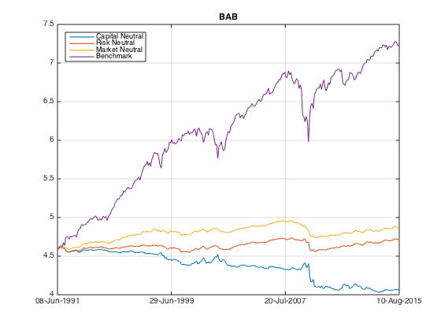
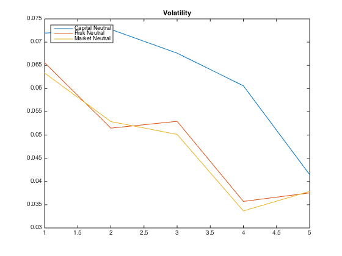

Multiple Factors
All in one place.
Contents
All for one and one for all.
imshow('allforone.jpg');
Preparation
Let's load the data from ..
load('../data_equity_list_us.mat'); load('../data_field_list.mat'); load('../data_historical_data_us.mat');
take data sample, load data & the list
index = datasample(1:1300,1000,'Replace',false);
px = fun_load_price(history_us, equity_list_us, index);
px = fun_clean_data(px);
list = equity_list_us(index,:);
load observations
mom_ts = fun_calculate_mom(px); pb_ts = fun_load_observations(history_us, equity_list_us, index,'pb'); cap_ts = fun_load_observations(history_us, equity_list_us, index,'cap'); beta_ts = fun_load_observations(history_us, equity_list_us, index,'beta'); grossmargin_ts = fun_load_observations(history_us, equity_list_us, index,'gm'); turnover_ts = fun_load_observations(history_us, equity_list_us, index,'turnover'); roa_ts = fun_load_observations(history_us, equity_list_us, index,'roa'); leverage_ts = fun_load_observations(history_us, equity_list_us, index,'leverage');
calculate score
score_mom_ts = fun_calculate_score(mom_ts,list,'sectorsort',px); score_pb_ts = -fun_calculate_score(pb_ts,list,'sectorsort',px); score_cap_ts = -fun_calculate_score(cap_ts,list,'sectorsort',px); score_beta_ts = -fun_calculate_score(beta_ts,list,'sectorsort',px); score_leverage_ts = -fun_calculate_score(leverage_ts,list,'sectorsort',px); score_roa_ts = fun_calculate_score(roa_ts,list,'sectorsort',px); score_grossmargin_ts = fun_calculate_score(grossmargin_ts,list,'sectorsort',px); score_turnover_ts = fun_calculate_score(turnover_ts,list,'sectorsort',px); score_quality_ts = score_leverage_ts+score_roa_ts+score_grossmargin_ts+score_turnover_ts; score_quality_ts = fun_combine_score(score_quality_ts);
Trim
score_mom_ts = score_mom_ts(75:end);
score_pb_ts = score_pb_ts(75:end);
score_cap_ts = score_cap_ts(75:end);
score_beta_ts = score_beta_ts(75:end);
score_quality_ts = score_quality_ts(75:end);
score_ts = {score_mom_ts; score_pb_ts; score_cap_ts; score_beta_ts; score_quality_ts};
px = px(75:end);
Capital neutral factor portfolios
i = 1; while i<=5 % load benchmark portfolio_weight_eq_weight_ts = fun_portfolio_weight_sector_neutral(score_ts{i},'equalweight'); portfolio_rt_ts = fun_portfolio_return(px, portfolio_weight_eq_weight_ts); benchmark = [100; 100*exp(fts2mat(cumsum(portfolio_rt_ts)))]; benchmark_ts{i} = fints(px.dates, benchmark,'EqualWeightIndex'); % calculate factor portfolio portfolio_weight_ts = fun_portfolio_weight_sector_neutral(score_ts{i},'longonly'); portfolio_cap_ts{i} = fun_sequential_backtest_partial(100, px, benchmark_ts{i},1, portfolio_weight_ts,false); correlation_matrix = corrcoef(fts2mat(tick2ret(portfolio_cap_ts{i})), fts2mat(tick2ret(benchmark_ts{i}))); correlation(i) = correlation_matrix(1,2); sharpe_ratio(i) = sqrt(12)*sharpe(fts2mat(tick2ret(portfolio_cap_ts{i})),0); vol(i) = sqrt(12)*std(fts2mat(tick2ret(portfolio_cap_ts{i}))); i = i+1; end corrcoef([fts2mat(tick2ret(portfolio_cap_ts{1})) fts2mat(tick2ret(portfolio_cap_ts{2})) fts2mat(tick2ret(portfolio_cap_ts{3})) fts2mat(tick2ret(portfolio_cap_ts{4})) fts2mat(tick2ret(portfolio_cap_ts{5}))]) portfolio_cap_ts_CN = portfolio_cap_ts; correlation_CN = correlation; sharpe_ratio_CN = sharpe_ratio; vol_CN = vol;
ans =
1.0000 -0.7768 -0.5457 0.5141 0.4964
-0.7768 1.0000 0.7891 -0.6920 -0.6403
-0.5457 0.7891 1.0000 -0.6945 -0.4401
0.5141 -0.6920 -0.6945 1.0000 0.4170
0.4964 -0.6403 -0.4401 0.4170 1.0000
Risk neutral factor portfolios
i = 1; while i<=5 % load benchmark portfolio_weight_eq_weight_ts = fun_portfolio_weight_sector_neutral(score_ts{i},'equalweight'); portfolio_rt_ts = fun_portfolio_return(px, portfolio_weight_eq_weight_ts); benchmark = [100; 100*exp(fts2mat(cumsum(portfolio_rt_ts)))]; benchmark_ts{i} = fints(px.dates, benchmark,'EqualWeightIndex'); % calculate factor portfolio portfolio_weight_ts = fun_portfolio_weight_sector_neutral(score_ts{i},'longonly'); portfolio_cap_ts{i} = fun_sequential_backtest_autoadjust(100, px, benchmark_ts{i}, portfolio_weight_ts,false); correlation_matrix = corrcoef(fts2mat(tick2ret(portfolio_cap_ts{i})), fts2mat(tick2ret(benchmark_ts{i}))); correlation(i) = correlation_matrix(1,2); sharpe_ratio(i) = sqrt(12)*sharpe(fts2mat(tick2ret(portfolio_cap_ts{i})),0); vol(i) = sqrt(12)*std(fts2mat(tick2ret(portfolio_cap_ts{i}))); i = i+1; end corrcoef([fts2mat(tick2ret(portfolio_cap_ts{1})) fts2mat(tick2ret(portfolio_cap_ts{2})) fts2mat(tick2ret(portfolio_cap_ts{3})) fts2mat(tick2ret(portfolio_cap_ts{4})) fts2mat(tick2ret(portfolio_cap_ts{5}))]) portfolio_cap_ts_RN = portfolio_cap_ts; correlation_RN = correlation; sharpe_ratio_RN = sharpe_ratio; vol_RN = vol;
ans =
1.0000 -0.6201 -0.2888 0.2597 0.3856
-0.6201 1.0000 0.6124 -0.3031 -0.4738
-0.2888 0.6124 1.0000 -0.3476 -0.1848
0.2597 -0.3031 -0.3476 1.0000 0.1129
0.3856 -0.4738 -0.1848 0.1129 1.0000
Market neutral factor portfolios
hedge_ratio = [0.82 1.23 1.2 0.75 0.88]; i = 1; while i<=5 % load benchmark portfolio_weight_eq_weight_ts = fun_portfolio_weight_sector_neutral(score_ts{i},'equalweight'); portfolio_rt_ts = fun_portfolio_return(px, portfolio_weight_eq_weight_ts); benchmark = [100; 100*exp(fts2mat(cumsum(portfolio_rt_ts)))]; benchmark_ts{i} = fints(px.dates, benchmark,'EqualWeightIndex'); % calculate factor portfolio portfolio_weight_ts = fun_portfolio_weight_sector_neutral(score_ts{i},'longonly'); portfolio_cap_ts{i} = fun_sequential_backtest_partial(100, px, benchmark_ts{i}, hedge_ratio(i), portfolio_weight_ts,false); correlation_matrix = corrcoef(fts2mat(tick2ret(portfolio_cap_ts{i})), fts2mat(tick2ret(benchmark_ts{i}))); correlation(i) = correlation_matrix(1,2); sharpe_ratio(i) = sqrt(12)*sharpe(fts2mat(tick2ret(portfolio_cap_ts{i})),0); vol(i) = sqrt(12)*std(fts2mat(tick2ret(portfolio_cap_ts{i}))); i = i+1; end corrcoef([fts2mat(tick2ret(portfolio_cap_ts{1})) fts2mat(tick2ret(portfolio_cap_ts{2})) fts2mat(tick2ret(portfolio_cap_ts{3})) fts2mat(tick2ret(portfolio_cap_ts{4})) fts2mat(tick2ret(portfolio_cap_ts{5}))]) portfolio_cap_ts_MN = portfolio_cap_ts; correlation_MN = correlation; sharpe_ratio_MN = sharpe_ratio; vol_MN = vol;
ans =
1.0000 -0.6915 -0.3393 0.2515 0.3794
-0.6915 1.0000 0.5742 -0.3417 -0.5379
-0.3393 0.5742 1.0000 -0.3285 -0.2048
0.2515 -0.3417 -0.3285 1.0000 0.1211
0.3794 -0.5379 -0.2048 0.1211 1.0000
Show Result
figure; i=1; while i<=5 plot(log(portfolio_cap_ts_CN{i})); legend('off'); hold on; i=i+1; end plot(log(benchmark_ts{1})); legend('off'); hold off; title('Capital Neutral Factors'); legend('MOM','HML','SML','BAB','QUAL','Benchmark','Location','northwest'); snapnow; i=1; while i<=5 plot(log(portfolio_cap_ts_RN{i})); legend('off'); hold on; i=i+1; end plot(log(benchmark_ts{1})); legend('off'); hold off; title('Risk Neutral Factors'); legend('MOM','HML','SML','BAB','QUAL','Benchmark','Location','northwest'); snapnow; i=1; while i<=5 plot(log(portfolio_cap_ts_MN{i})); legend('off'); hold on; i=i+1; end plot(log(benchmark_ts{1})); hold off; title('Market Neutral Factors'); legend('MOM','HML','SML','BAB','QUAL','Benchmark','Location','northwest'); snapnow; title_name = {'MOM';'HML';'SML';'BAB';'QUAL'}; i=1; while i<=5 plot(log(portfolio_cap_ts_CN{i})); hold on; plot(log(portfolio_cap_ts_RN{i})); plot(log(portfolio_cap_ts_MN{i})); plot(log(benchmark_ts{i})); legend('off'); hold off; title(title_name{i}); legend('Capital Neutral', 'Risk Neutral','Market Neutral','Benchmark','Location','NorthWest'); snapnow; i=i+1; end plot(correlation_CN); hold on; plot(correlation_RN); plot(correlation_MN); hold off; title('Correlation'); legend('Capital Neutral','Risk Neutral', 'Market Neutral', 'Location','Northwest'); snapnow; plot(sharpe_ratio_CN); hold on; plot(sharpe_ratio_RN); plot(sharpe_ratio_MN); hold off; title('Sharpe Ratio'); legend('Capital Neutral','Risk Neutral', 'Market Neutral', 'Location','Northwest'); snapnow; plot(vol_CN); hold on; plot(vol_RN); plot(vol_MN); hold off; title('Volatility'); legend('Capital Neutral','Risk Neutral', 'Market Neutral', 'Location','Northwest'); snapnow; 